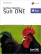
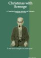

Writing

Getting Started with Sun One
Publisher: Sun Microsystems Press and Prentice Hall
Journeys: a Peninsula Writers Bloc Anthology
Publisher: Tiger Farm Press -- I was an author, the editor, and publisher.

Scrooge
I wrote this story as an exercise to learn how to write stories.
I learned from Charles Dickens.
At first, I worked with university editors and publishers. In the corporate world, I worked with business editors and publishers. I worked with the editors and book producers of Prentice Hall.
My writing career began while attending the University of Manitoba where I wrote computer documents to help professors, and I wrote for the computer department. My writing and teaching skills have taken me around the world.
Now, O write articles at work, personal creative writing projects, and write personal travel books. On one trip, I had stopped in London for a day, then traveled by Eurostar, the high speed train, under the English Channel, through the Chunnel, to Paris on my way to the Louvre.